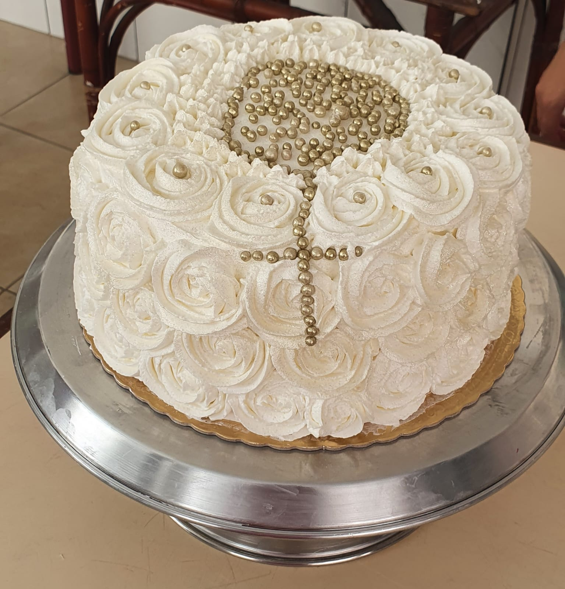
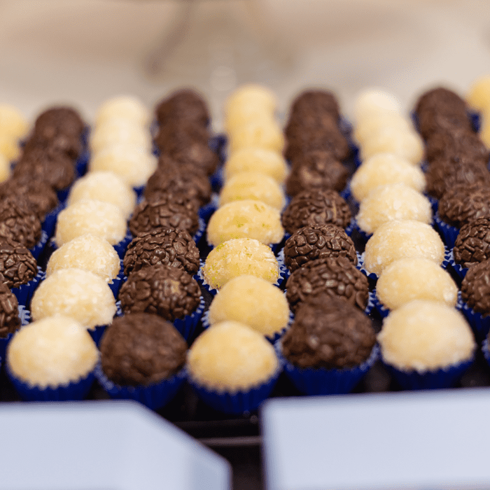
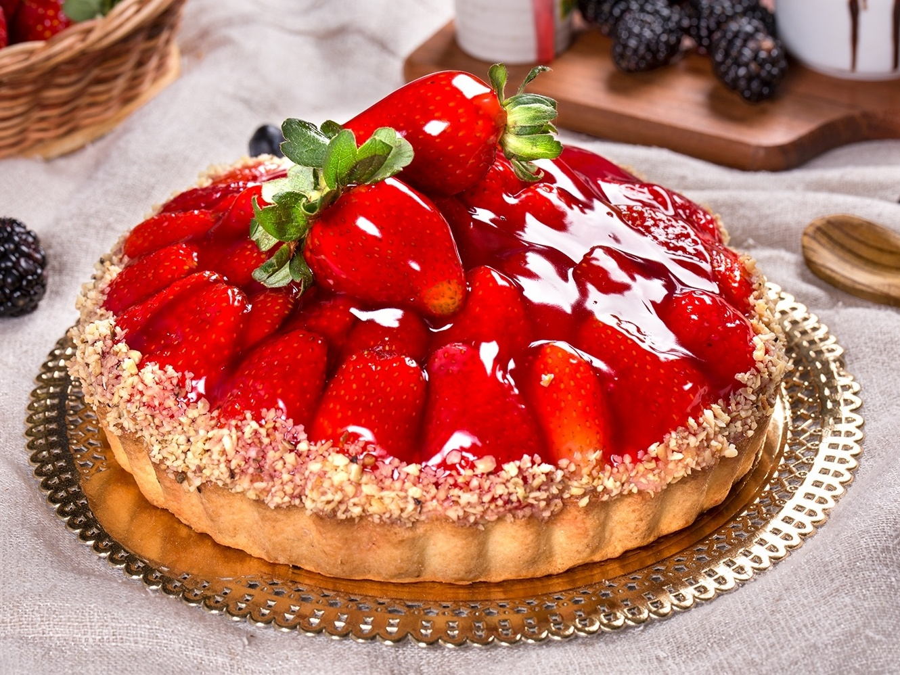

Nossos Bolos
Bolos

Se você é apaixonado por doces e quer surpreender seus convidados com um bolo delicioso, feito com ingredientes de qualidade e muito carinho, você está no lugar certo!
Nosso cardápio inclui desde bolos tradicionais, como o de chocolate ou cenoura, até opções mais elaboradas, como o bolo de red velvet ou o bolo de frutas vermelhas.
Também oferecemos opções de decoração personalizada, para que seu bolo fique ainda mais bonito e surpreendente. Podemos criar desenhos, letras e até mesmo fotos comestíveis para tornar o seu bolo único e inesquecível.
Bolo de pote

Também temos bolo de pote ;) Aqui na nossa loja de confeitaria, nós oferecemos bolos de pote deliciosos e personalizados que são perfeitos para qualquer ocasião.
E se você estiver procurando por algo ainda mais especial, nossos bolos de pote personalizados são a escolha perfeita. Podemos decorar seus bolos de pote de acordo com o tema ou as cores da sua festa, criando uma sobremesa única que todos irão adorar.
Então, se você está procurando um bolo delicioso e conveniente para sua próxima comemoração, não procure mais! Faça sua encomenda conosco e experimente nossos bolos de pote feitos sob medida para você. Você não ficará desapontado!
Bolos caseiro

Com uma variedade de sabores que vão desde o tradicional bolo de fubá com goiabada, até o delicioso bolo de banana com canela, temos certeza de que você encontrará o sabor perfeito para a sua ocasião especial.
Além do sabor delicioso, nossos bolos são feitos com muito amor e carinho. Cada bolo é preparado de forma artesanal e sob encomenda, garantindo que você receba um produto fresco e personalizado.
E se você tiver alguma preferência ou restrição alimentar, não se preocupe! Podemos adaptar a receita para atender às suas necessidades e preferências pessoais.
Nossos Doces
Docinhos

Temos uma grande variedade de sabores, desde os clássicos até os mais inusitados, como brigadeiro gourmet, beijinho de coco, cajuzinho, bicho de pé, brigadeiro de churros, entre outros. Além disso, nossos docinhos são feitos com ingredientes de alta qualidade, garantindo um sabor irresistível.
Nós entendemos que cada evento é único e especial, por isso, trabalhamos para personalizar cada um dos nossos docinhos para atender as suas necessidades e preferências. Se você tem um tema específico para a sua festa, podemos criar docinhos personalizados que combinam perfeitamente com o seu evento.
Não se preocupe com a quantidade, fazemos docinhos sob encomenda para qualquer tamanho de evento, desde pequenas comemorações até grandes festas corporativas. Além disso, nossa equipe está sempre disponível para ajudá-lo a escolher a quantidade e variedade ideal para o seu evento.
Tortas

Nós oferecemos uma grande variedade de sabores, desde as tortas mais clássicas, como a torta de morango e a torta de limão, até as mais elaboradas e criativas, como a torta de Nutella, a torta de cheesecake de morango, entre outras. Todas elas são preparadas com ingredientes frescos e de alta qualidade, garantindo um sabor incrível.
Além disso, nossa equipe de confeiteiros experientes trabalha com muita dedicação para criar tortas que sejam visualmente deslumbrantes e que agradem aos olhos e ao paladar. Se você está planejando uma festa ou evento, nossas tortas doces são uma ótima escolha para impressionar seus convidados.
Não perca mais tempo procurando pela sobremesa perfeita, entre em contato conosco e faça sua encomenda de torta doce hoje mesmo! Nós garantimos que nossas tortas vão deixar todos com água na boca e que você e seus convidados vão adorar cada pedaço.